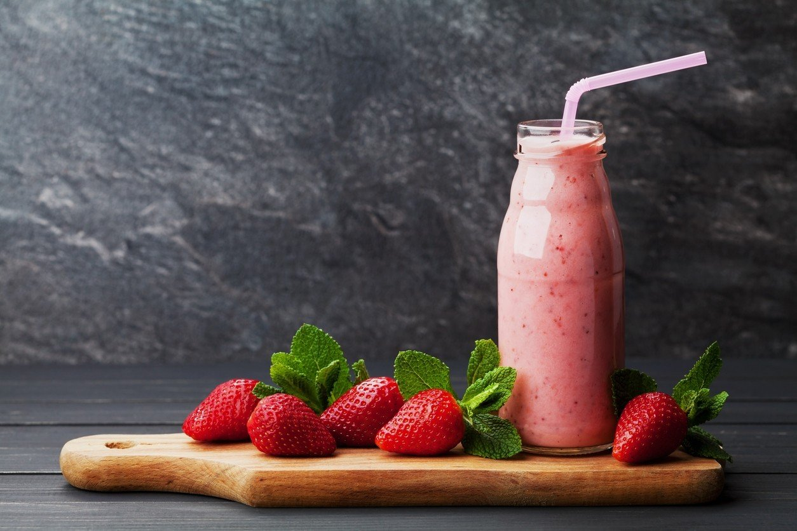

Erdbeer-Protein-Shake
 10min
10min simpel
simpel  11.03.2024
11.03.2024 | 250 | g frische Erdbeeren |
| 1 | EL Mandelmehl (teilentölt; à 15 g) |
| 100 | g Skyr |
| 150 | ml Milch (1,5 % Fett) |
| 1 | Msp. Vanillepulver |
Zubereitung
10min Arbeitszeit Gesamtarbeitszeit: 10min
Erdbeeren putzen, waschen und mit Mandelmehl, Skyr, Milch
Vanillepulver in einem Standmixer pürieren.
Erdbeer-Protein-Shake auf 2 Gläser verteilen und sofort servieren.
Erdbeer-Protein-Shake auf 2 Gläser verteilen und sofort servieren.
Rezept erstellt von
Lea Cotar